|
DJ Tours and Travels |

Welcome To Europe
Europe , one of the world's seven continents.
Visit the 10 WONDERS OF EUROPE - England , France , Belgium , Netherlands , Germany , Switzerland , Liechtenstein , Austria , Italy , Vatican.
16 Days/15 Nights Itinerary
| 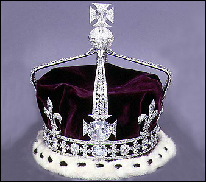 |
Day 1 : London
Arrive in London in the evening.
|
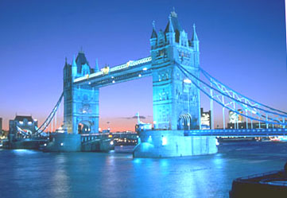 |
Day 2 : London
Visit Tower of London Museum to see the Koh-i-noor Diamond and photograph yourself with world famous personalities at Madame Tussauds Wax Museum.
City orientation tour includes Tower Bridge, Buckingham Palace, Piccadilly Circus, Westminster Abbey, Big Ben, River Thames, Trafalgar Square, Houses of Parliament, Hyde Park.
Enjoy the London Eye ride. |
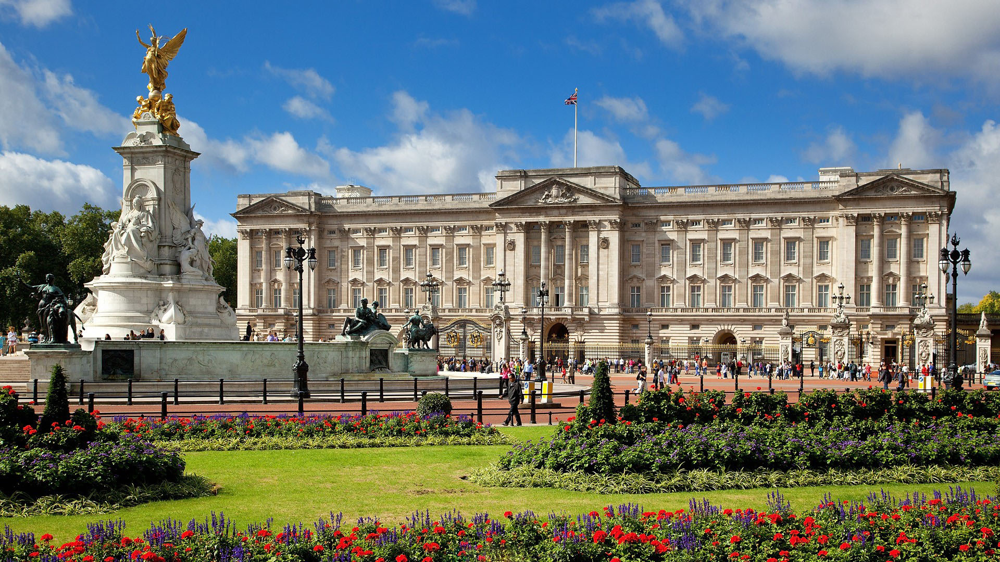 |
| 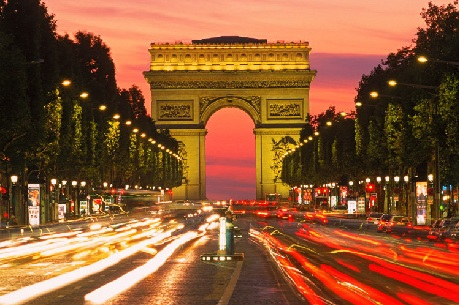 |
Day 3 : London - Paris
Enjoy the Eurostar travel from London to Paris. Arrive in Paris. Visit the Eiffel tower - top level to get a panoramic view of Paris.
City orientation tour includes Champs Elysees, Place de la Concorde and L'Arc de Triomphe. Enjoy the Seine river cruise. |
 |
Day 4 : Paris
Experience the excitement at Disneyland. Enjoy various rides and shows like "It's a Small World" and "Space mountain".
Meet your favorite cartoon characters like Mickey, Minnie, Pooh and Donald.
Enjoy the famous Paradise Latin Cabaret Show in the evening. |
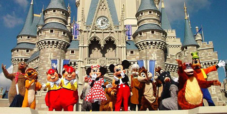 |
| 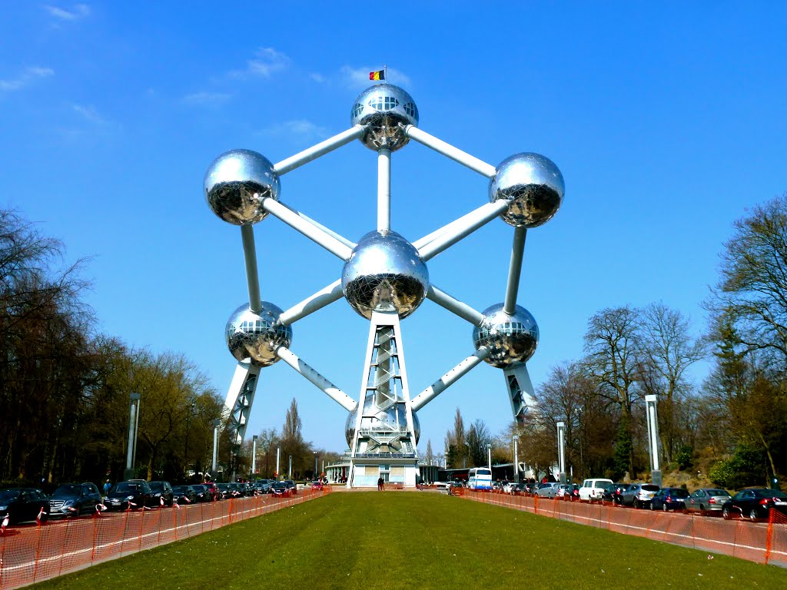 |
Day 5 : Paris - Brussels
Proceed to Brussels. Enjoy a photo stop at Atomium.
Walking city orientation tour includes the Grand Place, Town Hall, Guild Houses, Serclaes Monument and Manneken Pis Statue of a little boy.
|
Day 6 : Brussels - Amsterdam - Brussels
Arrive in Amsterdam. On arrival, Visit the beautiful Keukenhof - Tulip Gardens or Madurodam - Miniature of Holland.
Enjoy Amsterdam orientation city tour by Canal Cruise. |
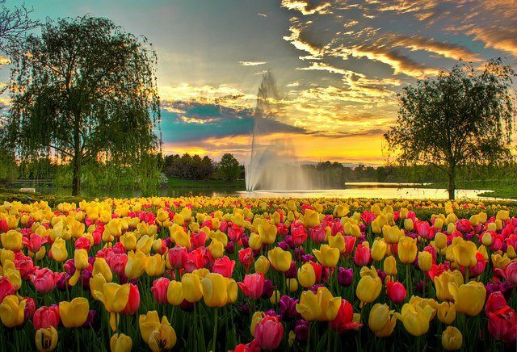 |
| 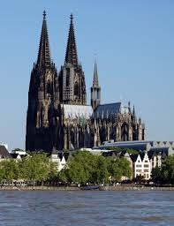 |
Day 7 : Brussels - Cologne - Mannheim
Arrive in Cologne. Photo stop at Cologne Cathedral. Arrive in Mannheim in the evening. |
Day 8 : Mannheim - Titisee - Zurich - Lucerne
Travel through the Black forest region, visit Cuckoo clock factory at Drubba, Titisee.
Visit Rhine Falls at Schaffhausen (Neuhausen) enjoy Boat ride to the rock for a spectacular view of the falls.
Photo stop at Zurich Lake. Arrive in Lucerne in the evening. |
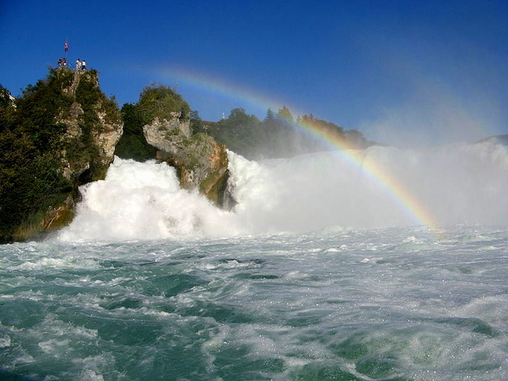 |
| 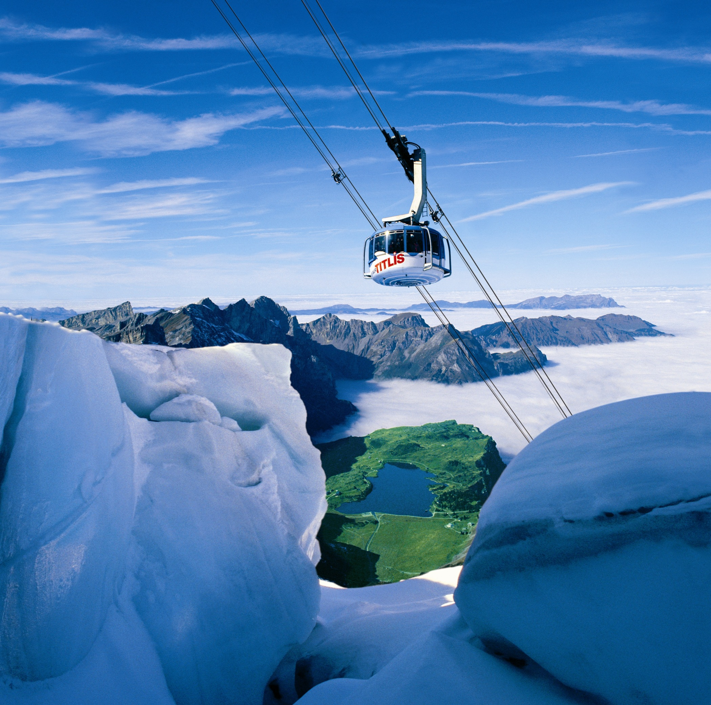 |
Day 9 : Lucerne - Mt. Titlis - Lucerne
Visit Engelberg - Mt. Titlis to experience 'Rotair Titlis' - World's 1st Revolving cable car ride to Mt. Titlis and visit Ice Grotto, thrilling Ice Flyer ride and Snow sliding.
Lucerne city orientation tour includes Lion Monument and Kappelbrucke Wooden Bridge.
Free time for shopping. Enjoy Lake Lucerne dinner cruise with Swiss Folklore music.
|
Day 10 : Lucerne - Jungfraujoch - Lucerne
Visit Jungfraujoch - top of Europe, en-route visit Trummelbach Glacial Waterfalls.
Take a Cogwheel train from Lauterbrunnen to Europe's highest railway station Jungfraujoch via Kleine Scheidegg station.
Visit Ice Palace with Ice sculptures and Sphin x Terrace. Drive through Interlaken city.
|
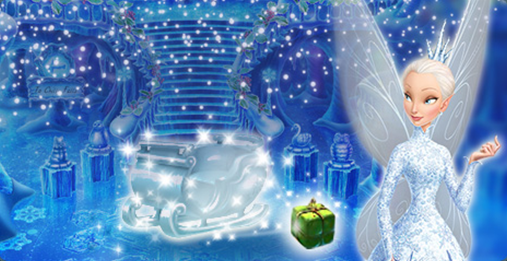 |
| 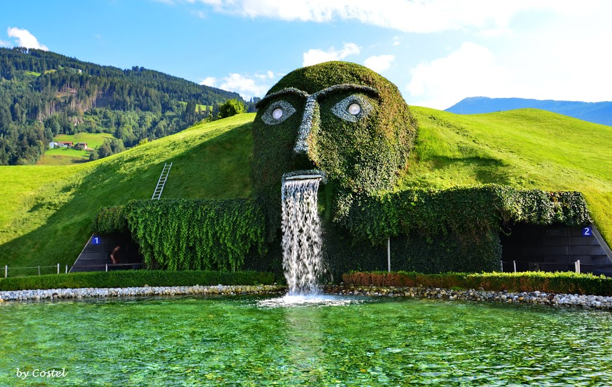 |
Day 11 : Lucerne - Vaduz - Wattens - Innsbruck
Drive through Vaduz - the capital of the principality of Liechtenstein.
Enjoy the surroundings of Vaduz by Tram. Visit Swarovski Crystal World and Museum at Wattens.
Arrive in Innsbruck in the evening.
Walking city orientation tour includes Inns River, Golden Roof and Maria Theresien Strasse. |
Day 12 : Innsbruck - Salzburg - Innsbruck
Visit Salzburg - the Sound of Music city.
Visit Mirabella Gardens followed by walking city orientation tour which includes Salzach River,
Mozart's birth place, Getreide Gasse, Linzer Gasse, Residenz Fountain, Salzburg Cathedral. |
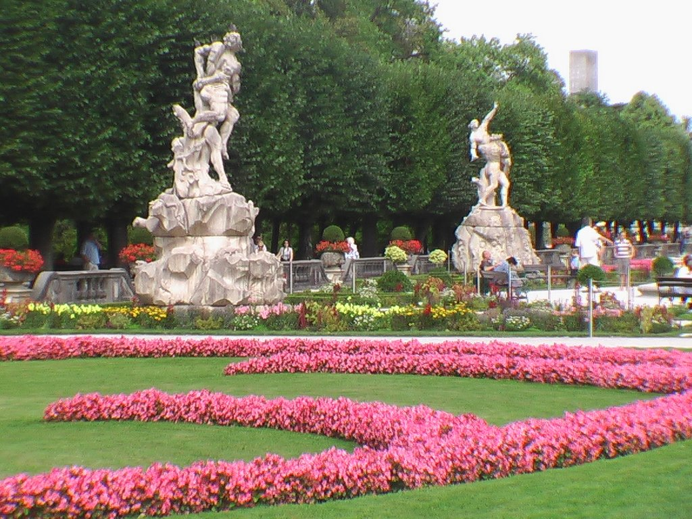 |
| 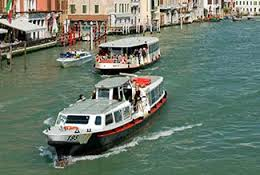 |
Day 13 : Innsbruck - Venice - Padova
Arrive in Venice. Enjoy Vaporetto water bus ride to Venice Island and the Gondola ride in the famous canals of Venice.
Visit Glass blowing factory from inside followed by walking city orientation tour which includes Bridge of Sighs, Doge's Palace, Bell Tower, St. Mark's Square, Basilica.
Arrive in Padova in the evening. |
Day 14 : Padova - Modena - Pisa - Florence - Perugia
Visit Ferrari Museum. Arrive in Pisa.
City orientation tour includes Square of Miracles, Baptistry, Cathedral and Leaning tower of Pisa.
Arrive in Florence. Photo-stop at Piazzale Michelangelo Point and Statue of David.
Arrive in Perugia - enjoy the Tuscana beauty of Italy. |
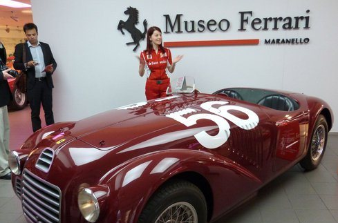 |
| 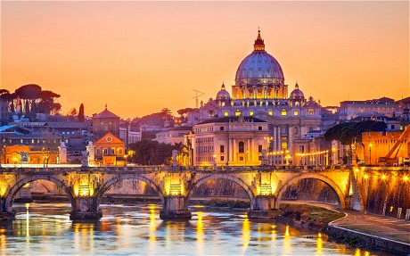 |
Day 15 : Perugia - Vatican - Rome
Proceed to Vatican, on arrival visit to the Vatican city includes Vatican Museum, Michelangelo's Frescoes, the Last Judgement,
Sistine Chapel, St. Peter's Basilica and Michelangelo's famous Pieta.
City orientation tour of Rome includes Tiber river , Roman Forum, Trevi Fountain, Circus Maximus, Piazza Venezia and a photo stop at Colosseum from outside. |
Day 16 : Departure from Rome
Board the flight for your hometown. Tour concludes. |
Meals on Tour :
Day 1 : Dinner
Day 2 - 15 : Breakfast, Lunch and Dinner
Day 16 : Breakfast
Extra Topping :
1) Tea / Coffee at London - Madame Tussauds Wax Museum.
2) Soft Drink at Disneyland.
3) Ice cream at Grand Place, Brussels.
4) Tea / Coffee at Madurodam.
5) Tea / Coffee at Rhine falls.
6) Movenpick Ice Cream at Mt. Titlis.
7) Tea / Coffee at Jungfrau.
8) Tea / Coffee at Swarovski Crystal Museum.
9) Italian Gelato Ice cream at Venice Island.
10) Ice Cream at Pisa.
11) Tea / Coffee at Trevi Fountain, Rome.
Our Speciality :
Caring Tour Manager throughout the tour.
Lunch Coupons at Disneyland .
Headphone services at Vatican museum.
Reporting & Dropping for Joining & Leaving :
Day 1 : At the Airport/Hotel/Sight seeing place (Please re-confirm with our tour consultant 8 days prior to the tour).
Day 16 : Tour concludes at the Hotel/ Airport- as per scheduled group flight.
! EARLY BIRDS GET DISCOUNTS !
TOUR PACKAGE : Rs.3,00,000 **Terms and Conditions Apply